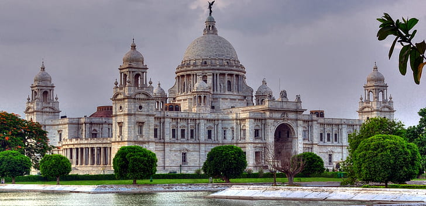
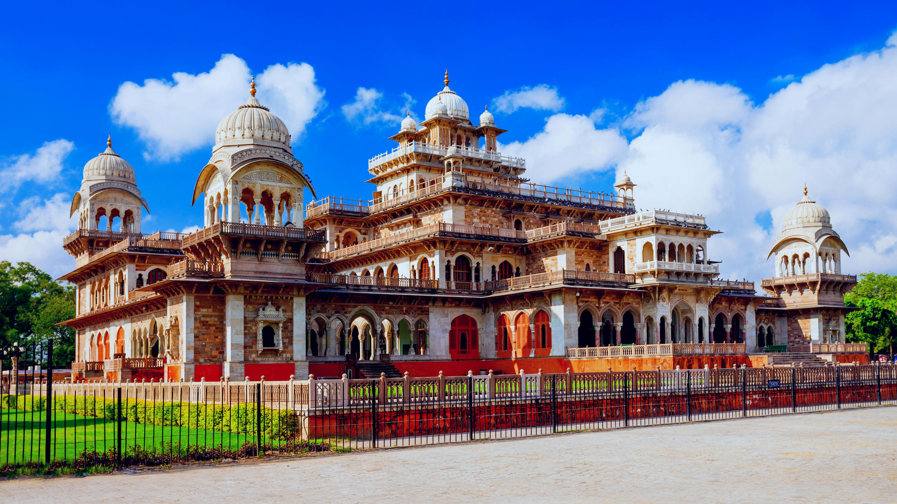

CHANGE IN ART PAINTING,LITERATURE,ARCHITECTURE.:DEVELOPMENT OF ARCHITECTURE.:
DEVELOPMENT OF ARCHITECTURE The coming of the Europeans marks the introduction of European architecture in India in the sixteenth century. The Arabian Sea forts at Chaul in Maharashtra (1516) and Diu in Gujarat (1536) are reminders of the essentially military character of the Portuguese colonial enterprise. The churches of old Goa give the best idea of the 'baroque ecclesiastical' style in India. The Se' (1562- 1651) is the largest cathedral in South Asia. The nearby Basilica of Bom Jesus (1605) is equally grand. The church is laid out on a cruciform plan with prominent transepts. Daneborg at Trangambadi on the Bay of Bengal coast of Tamil Nadu (1620) is an example of Danish military architecture.
British settlements were also martial in character, as may be judged from the star-shaped, polygon layouts of Fort William in Calcutta (now Kolkata) (1757) and Fort St George in Madras (now Chenna (1783). English church architecture is neo-classical as in the Cathedral Church of St. Thomas Bombay (now Mumbai) (1672-1718). Neo-Gothic architecture become fashionable in the nineteenth century, as can be seen in St Paul's Cathedral in Calcutta (1839-80) and All Saints Cathedral in Allahabad (U.P.). The same mix of styles characterise British civic monuments. One of the largest neo-classical projects of the cra is Raj Bhavan in Calcutta (1799-1802), seat of the British governors and viceroys, untill 1911. Other neo- classical projects include Rajiroji Hall in Madras (1802), Town Hall in Bombay (1833) and Senate Hall of Calcutta University (1864). Similar features characterise many of the princely residences of the era, such as the Aina Mahal at Murshidabad in West Bengal (1829-37) and the Falaknama Palace outside Hyderabad (1872). The Neo-Gothic style also proved serviceable for British civic monuments, e.g. the Convocation Hall and Rajabai Tower of Bombay University (1869-74), High Court (1869), Victoria Terminus (1888), and the Railway offices (1894). Neo-Gothic buildings are also found in Queen's College in Varanasi (1847) and High Court in Calcutta (1864-72).
An important innovation of the era was the Indo-Saracenic mode with its imaginative blend of Neo-Gothic elements with cusped arches, Chhatris, and bulbous domes drawn from late Mughal architecture. Monuments of Indo-Saracenic style includes those of Art Museum in Thiruvananthapuram in Kerala (1872), Senate House of Madras University in Chennai (1874-79), Lakshmi Vilas Palace in Vadodara (1881), Central Museum in Jaipur (1875-85), Senate House of Allahabad University (1883) and the K G Medical College in Lucknow (1912). Islamic revivalism characterises the Prince of Wales Museum (1908-15) and the General Post Office (1909-14) in Mumbai, High Court (1916) and Osmania General Hospital (1919) in Hyderabad. Hindu revivalism may be seen in the Lakshmi Narayan Mandir in New Delhi (1938). The Rashtrapati Bhavan (earlier the Viceroy's House), sited at the Rajpath of Delhi (1912-29), and the nearby circular 'Sansad Bhavan' are a monumental version of neo-classicism created by Edwin Lutyens. Neo-classicism in Calcutta at this time is best represented by the Victoria Memorial (1921), designed by William Emerson. The Umaid Bhavan in Jodhpur, in Rajasthan (1929-44) is designed in an Art Deco manner by Henry Vaughan Lanchester. After Independence, projects were taken up by architects of international repute. Le Corbusier, the Swiss-born architect contributed to the master plan of Chandigarh with his individual brand of modernism. The Indian Institute of Management, Ahmedabad was undertaken by the American Architect Louis Khan. Charles Corea created Gandhi memorial Center in Ahmedabad (1958-63) and the Jwahar Kala Kendra Complex in Jaipur (1986-91)
SOME OTHER ARCHITECTURE'S

THE RASHTRAPATI BHAVAN.!!

SENATE HOUSE OF MADRAS.!!

LAXMI VILLAS PALACE.!!

OSMANIA GENERAL HOSPITAL.!!
ALBERT HALL MUSEUM.!!
CASE STUDIES : MUMBAI AND CHENNAI
MUMBAI : (FORMERLY BOMBAY)
Bombay was acquired in 1661. It soon became the hub of commercial and cultural activities. Performing arts- dance, drama, music witnessed all- round development. New styles of f paintings were evolved. A large number of architectural structures remind us of the colonial days. These structures were European style. made in Indo-
The Victoria Terminus (renamed as Chhatrapati Shivaji Terminus), was built in 1888. Designed by FW Starus, it took about 10 years to complete. It is the westernmost end point of the Central Railway. It was put on the UNESCO World Heritage list in 2004.
Prince of Wales Museum (renamed as Chhatrapati Shivaji Maharaj Vastu Sangrahalaya) is located near the Gateway of India. It was designed by George Willet. It took 6 years to complete. The Museum is a combination of several architectural elements. Its high dome resembles that of the Taj Mahal at Agra. Its balconies and inland floors remind us of Mughal palaces. The Museum house rare and ancient exhibits of Indian history. It also has artefacts of the Indus Valley Civilisation and relics of the objects of the Maurya and Gupta periods.
Gateway of India: It was built during 1914-17 to commemorate the visit of George V and Queen Mary for the Darbar at Delhi in 1911. It was completed by George Willet and John Begg.
Other buildings include General Post Office, Municipal Corporation (1889-93), Raja Bhai Tower, Bombay University (1857), Elphinston College, Old Secretariat, Public Works Department, Central Indian Railway Offices (1894-99), Chamber of Commerce (1836), State Police Headquarters (1872-76).